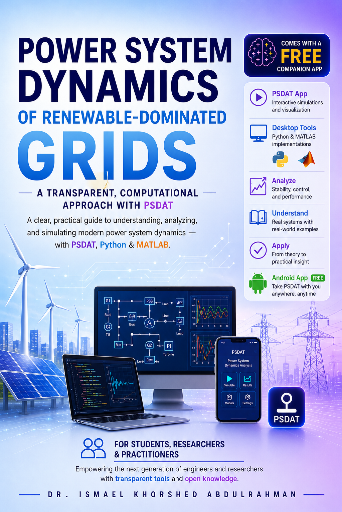
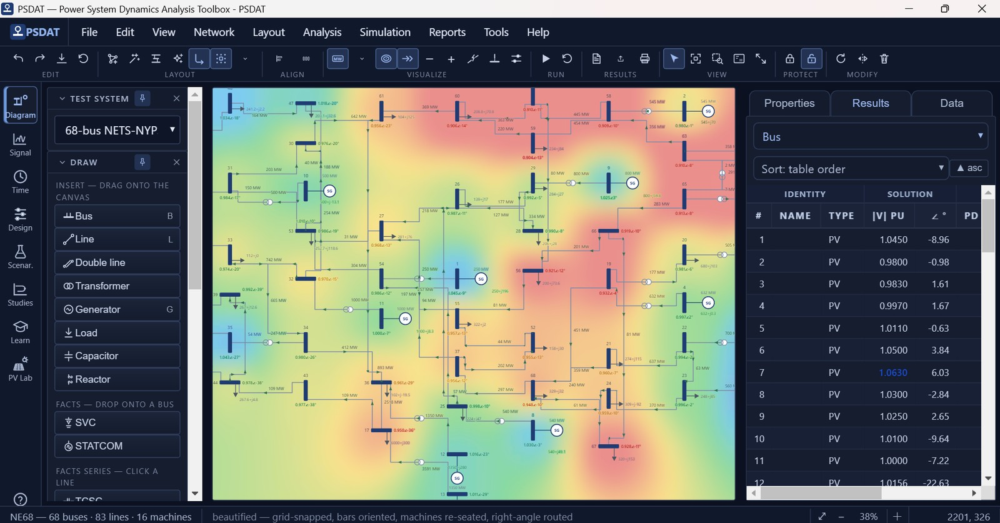
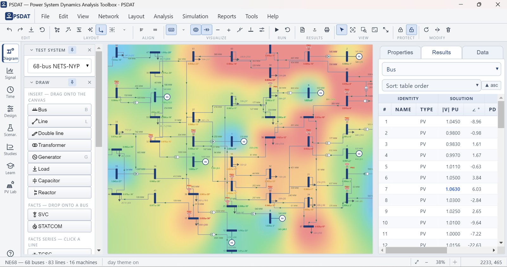
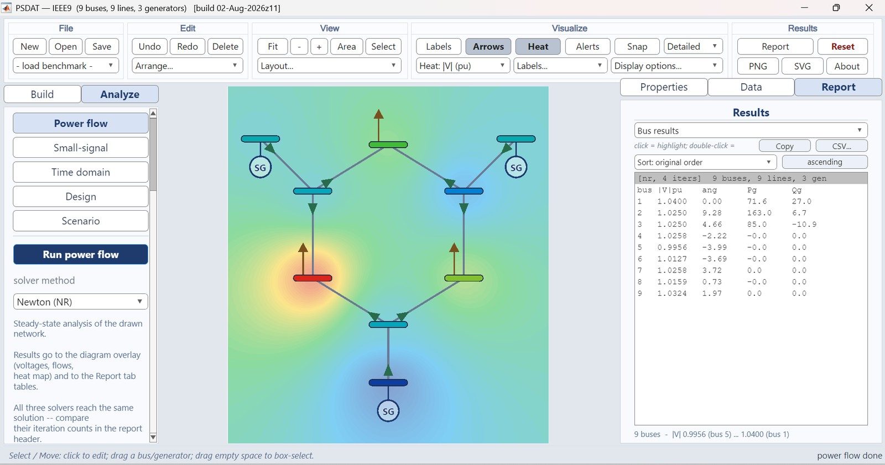
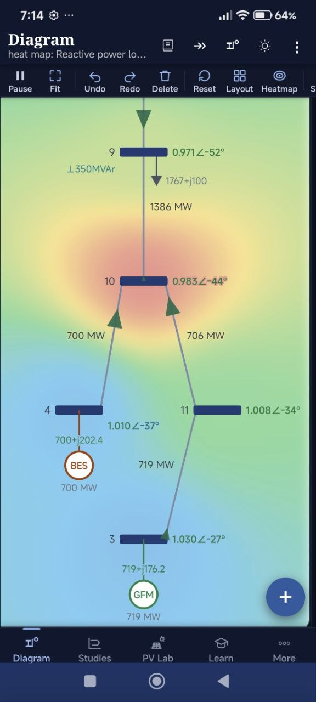
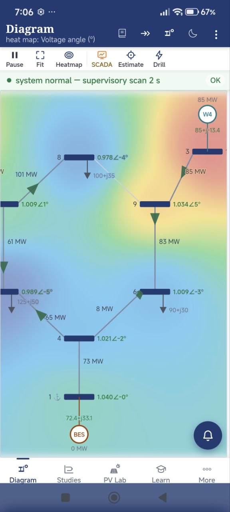
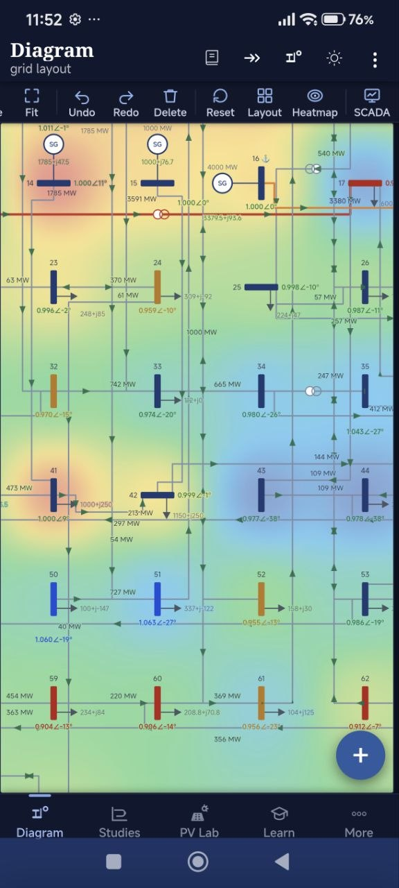
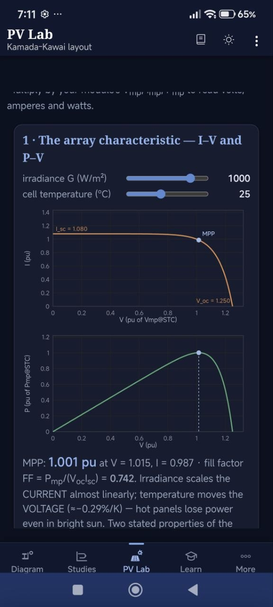

A graduate textbook and an open toolbox, built together. Every model, algorithm and numerical result in the book is reproducible with PSDAT — the equations you read and the code that solves them are, by construction, the same.

Most power-system texts stop at the equation. This one hands you the solver that produced every number on the page.
Twenty-four chapters from the algebraic network and the synchronous machine through grid-forming converters to wide-area damping control — derived in full, with worked examples and end-of-chapter problems.
Every model exists twice: a readable Python reference implementation and a MATLAB edition checked for numerical parity against it. No compiled black box anywhere in the chain.
Change a reactance, trip a line, raise the inverter share, and watch what the theory predicted actually happen — on your desktop or in your hand.
Free to read and download. Seven parts, twenty-four chapters, five appendices.
The same toolbox in two languages, checked against each other. MIT licensed.
Readable, dependency-light, cross-platform. Power flow, time-domain simulation, linearization and modal analysis, FACTS models, a full GUI, and notebooks.
# clone and run
git clone https://github.com/ismaelabdulrahman/psdat-book.git
cd psdat-book/python
pip install -r requirements.txt
python psdat_gui.py
Python 3.9+ · NumPy, SciPy, Matplotlib.
On Windows, Run PSDAT.bat does it for you.
The same models in MATLAB, with a graphical app, a self-test, a parity check against the Python engine, and optional Simulink export.
% add matlab/ to your path, then PSDAT_App % graphical application PSDAT_Demo % scripted demonstration PSDAT_SelfTest % verify the installation PSDAT_Parity % check against Python
MATPOWER optional · Simulink optional.
See it running — the desktop application, in Python (dark & day themes) and the MATLAB edition.



The same engine, on your phone, fully offline. Build a network by touch and watch the heat map redraw as the power flow re-solves.




PSDAT Mobile is currently in closed testing on Google Play — completely free. Here's how to get on the tester list:
Because it's a closed test, only approved testers can install it. Your email stays private — only the author sees it — and you'll get access shortly after being added.